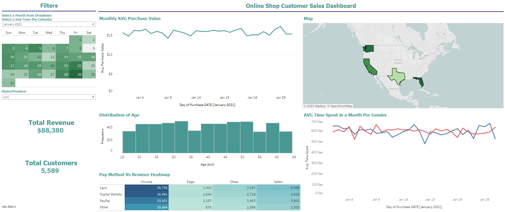
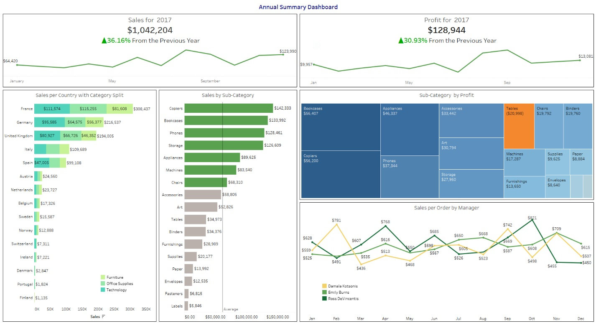

Hello, I'm Ido Stern – a Business Analyst and BI Developer with proven experience translating complex data into actionable insights.
I specialize in SQL, BI tools, and dashboard development, supporting data-driven decision-making and business growth.
I’m highly motivated, adaptable, and thrive under pressure, with strong emotional intelligence and a collaborative approach that helps build positive relationships across teams.
I bring creativity and fresh perspectives to every challenge, combining analytical expertise with a people-oriented mindset.
Download My CV (PDF)

I created a Tableau dashboard using the "Online Shop Customer Sales Data" dataset from Kaggle.
The interactive dashboard includes filters for month, day, and state/province, highlighting key metrics like total revenue,
customer count, monthly average purchase values, sales distribution, customer demographics,
gender-based time spent, and a payment method vs. browser heatmap.
This project demonstrates my data visualization expertise and insights from complex datasets.

This Tableau dashboard comprehensively analyzes the EU Superstore’s performance in 2017. Key insights include a 36.16% increase in total sales, reaching $1.04M, and a 30.93% growth in profit, totaling $128,944.
The dashboard highlights top-performing countries (France, Germany, UK) and breaks down sales by category and sub-category, revealing that Copiers and Phones were top revenue drivers, while Tables incurred losses despite high sales.
A regional analysis of manager performance offers visibility into monthly sales trends across the East, Central, and West regions.
This project demonstrates my ability to extract actionable insights from complex datasets using effective data visualization.